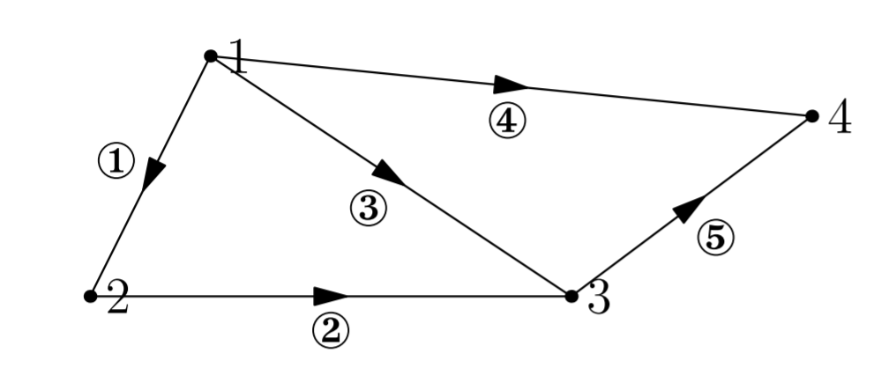

线性代数笔记(十二)——图和网络
这一讲作为第一部分的最后一节内容，主要着重于描述线性代数的应用。
图和网络
有向图
给定一个有向图：4节点，5条边

可以用如下方式来抽象描述： \[ \begin{array}{c | c c c c} & node_1 & node_2 & node_3 & node_4 \\ \hline edge_1 & -1 & 1 & 0 & 0 \\ edge_2 & 0 & -1 & 1 & 0 \\ edge_3 & -1 & 0 & 1 & 0 \\ edge_4 & -1 & 0 & 0 & 1 \\ edge_5 & 0 & 0 & -1 & 1 \end{array} \]
写成\(5\times 4\)矩阵来表示如下： \[ A=\begin{bmatrix} -1 & 1 & 0 & 0 \\ 0 & -1 & 1 & 0 \\ -1 & 0 & 1 & 0 \\ -1 & 0 & 0 & 1 \\ 0 & 0 & -1 & 1 \end{bmatrix} \]
这种矩阵叫做关联矩阵，其中每一列代表一个节点，每一行代表一条边（正负代表方向）。关联矩阵一般是稀疏阵，因为每一行只有两个非零元素。通过观察前三行，可以看出这三个行向量线性相关，而实际上，它的物理意义就是这三个向量（三条边）可以形成回路。
\(A\)的零空间
矩阵\(A\)的零空间可以通过解\(Ax=0\)来得到，有： \[ Ax= \begin{bmatrix} -1 & 1 & 0 & 0 \\ 0 & -1 & 1 & 0 \\ -1 & 0 & 1 & 0 \\ -1 & 0 & 0 & 1 \\ 0 & 0 & -1 & 1 \end{bmatrix} \begin{bmatrix} x_1 \\ x_2 \\ x_3 \\ x_4 \end{bmatrix}=0 \]
展开得： \[ \begin{bmatrix} x_2-x_1 \\ x_3-x_2 \\ x_3-x_1 \\ x_4-x_1 \\ x_4-x_3 \end{bmatrix}= \begin{bmatrix} 0 \\ 0 \\ 0 \\ 0 \\ 0 \end{bmatrix} \]
引入矩阵的实际意义：将\(x=\begin{bmatrix}x_1 & x_2 & x_3 & x_4\end{bmatrix}\)视为各节点电势，则式子中的诸如\(x_2-x_1\)的元素，可以看做该边上的电势差。容易看出其中一个解\(x=\begin{bmatrix}1\\ 1\\ 1\\ 1\end{bmatrix}\)，即等电势情况，此时电势差为\(0\)。化简\(A\)易得\(rank(A)=3\)，所以其零空间维数应为\(n-r=4-3=1\)，即\(\begin{bmatrix}1\\1\\1\\1\end{bmatrix}\)就是其零空间的一组基。
Q: 那么以电势为例，零空间的物理意义是什么呢？ A: 电势差和电流的形成之间有着直接关系，\(b=0\)说明我们求解的情况是各个边上都没有电流（或者说电势差）的情况，而我们最后所得到的解就意味着，当各点电势相等时，边上电流（电势差）为零，符合我们的常识。而这就是零空间的物理意义。
\(A\)的左零空间
\(A\)的左零空间是什么呢？或者说\(A^T\)的零空间是什么呢？即求\(A^Ty=0\)： \[ A^Ty=0= \begin{bmatrix} -1 & 0 & -1 & -1 & 0 \\ 1 & -1 & 0 & 0 & 0 \\ 0 & 1 & 1 & 0 & -1 \\ 0 & 0 & 0 & 1 & 1 \end{bmatrix} \begin{bmatrix} y_1 \\ y_2 \\ y_3 \\ y_4 \\ y_5 \end{bmatrix}=\begin{bmatrix} -y_1-y_3-y_4 \\ y_1-y_2 \\ y_2+y_3-y_5 \\ y_4+y_5 \end{bmatrix}= \begin{bmatrix} 0 \\ 0 \\ 0 \\ 0 \end{bmatrix} \]
接着说上文提到的的电势差，引入\(y\)的实际物理意义：即各边上的电流。电流和电势差的关系服从欧姆定律：边上的电流值是边上电势差的倍数，这个倍速就是边的电导，亦即电阻的倒数，通常我们把这个常数视为一个系数矩阵记为\(C\)。于是，矩阵\(C\)就将电势差与电流联系了起来： \[ y=\begin{bmatrix} y_1 \\ y_2 \\ y_3 \\ y_4 \\ y_5 \end{bmatrix}=C\begin{bmatrix} x_2-x_1 \\ x_3-x_2 \\ x_3-x_1 \\ x_4-x_1 \\ x_4-x_3 \end{bmatrix} \]
实际上\(A^Ty=0\)阐释的就是“基尔霍夫电流定律”（KCL），基尔霍夫电流定律是一个平衡方程，守恒定律，它说明了流入等于流出，电荷在结点上不会积累。
对于\(A^T\)，根据上文得出其零空间的维数是\(2\)，则零空间的基应该有两个向量。假设\(y_1=1\)，也就是令\(1\)安培的电流在边\(1\)上流动，由图看出\(y_2\)也应该为\(1\)，再令\(y_3=-1\)，也就是让\(1\)安培的电流流回节点\(1\)，得出\(y_4=y_5=0\)；
得到一个符合KCL的向量\(\begin{bmatrix}1\\ 1\\ -1\\ 0\\ 0\end{bmatrix}\)，代回方程组发现此向量即为一个解，这个解发生在节点\(1,2,3\)组成的回路中，该解即为零空间的一个基。
如法炮制可以得出另一个基向量：\(\begin{bmatrix}0\\ 0\\ 1\\ -1\\ 1\end{bmatrix}\)，这实际上是节点\(1,3,4\)构成的回路。
如此，我们得到\(N(A^T)\)的一组基为\(\begin{bmatrix}1\\ 1\\ -1\\ 0\\ 0\end{bmatrix}\quad\begin{bmatrix}0\\ 0\\ 1\\ -1\\ 1\end{bmatrix}\)。
节点\(1,2,3,4\)构成的大回路实际上是两个基向量回路的叠加。
\(A\)的行空间
亦即\(A^T\)的列空间，方便起见我们直接计算\(A^T\)的列空间： \[ A^T= \begin{bmatrix} -1 & 0 & -1 & -1 & 0 \\ 1 & -1 & 0 & 0 & 0 \\ 0 & 1 & 1 & 0 & -1 \\ 0 & 0 & 0 & 1 & 1 \end{bmatrix} \]
显然，\(A^T\)的主列为第\(1,2,4\)列，对应在图中就是边\(1,2,4\)，可以发现这三条边没有组成回路（换句话说，线性无关等价于没有回路）。由\(4\)个节点与\(3\)条边组成的图没有回路，就表明\(A^T\)的对应列向量线性无关，也就是（\(nodes-1\)）条边线性无关。
没有回路的图叫作树。
再看左零空间的维数公式：\(dim N(A^T)=m-r\)，左零空间的维数就是相互无关的回路的数量，于是得到\(loops=edges-(nodes-1)\)，整理得： \[ nodes-edges+loops=1 \]
此等式对任何图均有效，任何图都有此拓扑性质，这就是著名的欧拉公式： \[ 节点数-边数+最小回路数=1 \]
附录
视频
参考链接
本博客所有文章除特别声明外，均采用 CC BY-SA 4.0 协议 ，转载请注明出处！